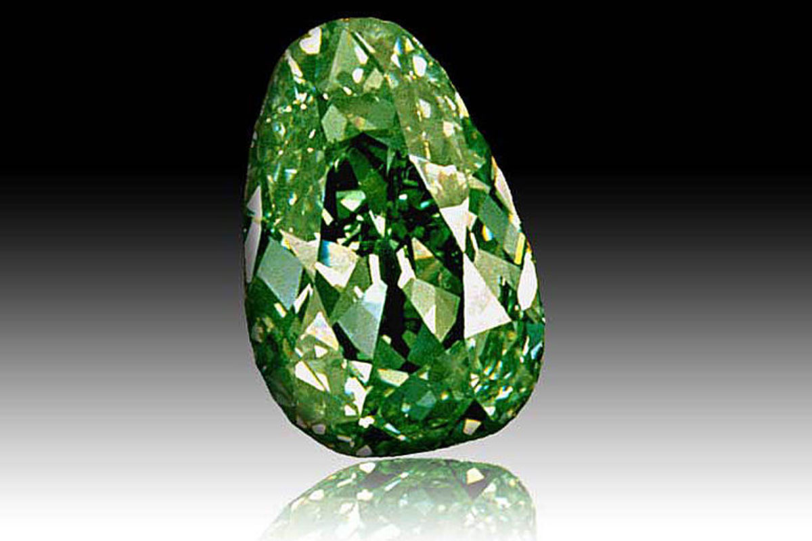

Профессор Бэрстоун и доктор Дэй вместе с собакой Эрнестом были в экспедиции в Сибири, когда обнаружили алмаз Царь.
Он был спрятан в отдаленной горной пещере.
Братья Бонд попытались саботировать экспедицию и вернуть алмаз, но безуспешно.
Команда вернулась в Москву с бриллиантом, и в Доме Волкова проходит специальная выставка, посвященная их открытию.
